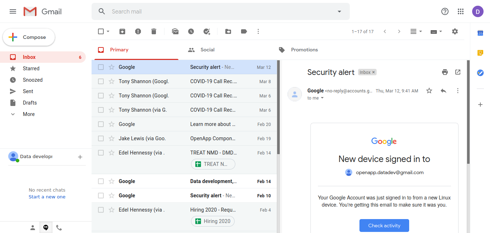
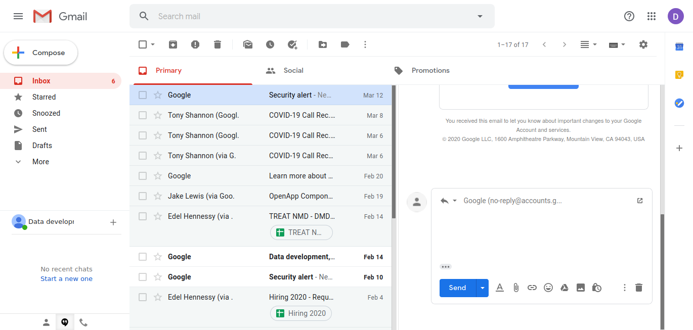
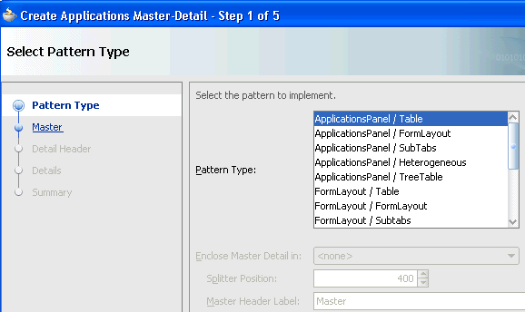
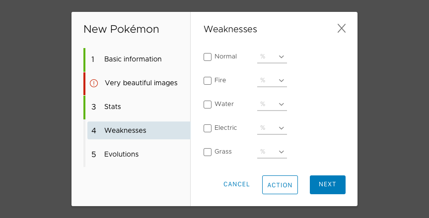
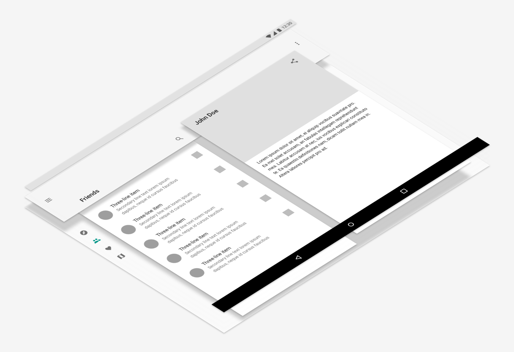
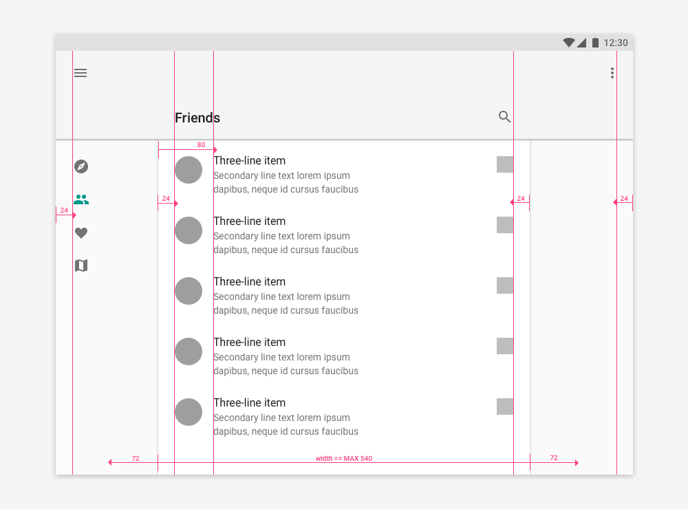
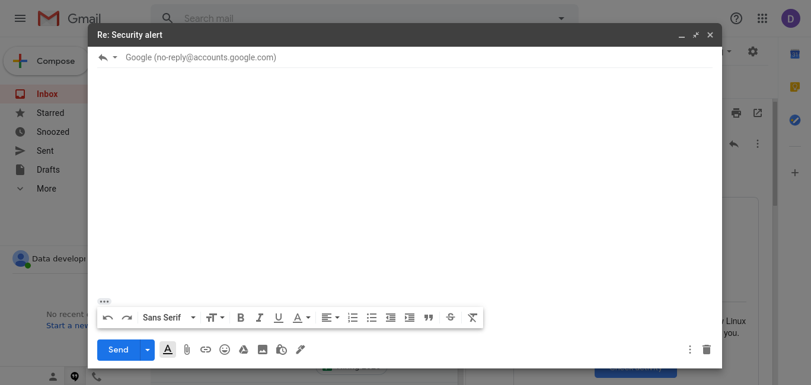

General UX Patterns
Purpose of Presentation - to look at the main patterns used in Users Interface Design with a view to summarise the most useful for building a UX Toolkit
Master detail
This is widely found (see Gmail below) UI Pattern which can act as a work horse Pattern in our set of solutions
Gmail Master > Detail
Gmail Master > Edit
Gmail Master > Modal

Master Detail Wizard
The Master - Detail could amended to behave as a Wizard whereby the active row is the active Step of the Wizard.
Master Detail Wizard
The Master - Detail could amended to behave as a Wizard whereby the active row is the active Step of the Wizard.
The Old Paradigm
Overlay definitions
NNGroup definition of a Page
- NNGroup - "popup (also known as an overlay or popover)" is a window or dialog that appears on top of the page content with 2 dimensions = Interactivity + Dimmedness
- The key distinction of a "popup" is that it is existing on a layer above the "background content"
- The background content will have the main navigation and is considered the 'page'
General Definitions
- Dialogue: “conversation” between the system and the user
- Mode: A special state of the system in which there is s somewhat different user interface. Each mode may come with different actions
- Overlay: A content box that is displayed on top of (and is noticeably smaller on a Desktop screen) another page
- Scrim/Lightbox: A temporary treatment that can be applied to surfaces for the purpose of making content on the surface less prominent
- Modal: The content on the page is disabled until the user explicitly interacts with the overlay
- Non-modal: Users can still interact with the background content (eg. clicking links or buttons) while the overlay remains visible
Norman-Nielson 2 axis Diagram
- Visual Dimming 2 Non
- Modal 2 Nonmodal (>Interactivity)
A Problem: rich amount of functionality & smaller screens don't easily co-exist
- Traditional solution 1: Insist on larger screens
- Traditional solution 2: Insist on limited functionality/content
Paradigm shift
Master detail on small screens
Without adaption it is inappropriate for use on smaller screens, where the leveraging of Modality is much more useful Pattern
Mobile first is an approach suggesting the only way to design for mobile is by addressing mobile early
Large

Small

Large 3D
Small 3D

Responsive Small Phone

Responsive Tablet
Responsive Desktop

Microsoft
This implementation of 2 layer Master > Detail is creating a layer in non-modular way - ie the main navigation sits in place to be interacted with when needed. This illustrates that Master > Detail could behave inside of a single 'Mode'.

Design
https://medium.com/@manuel.vonau/what-happened-to-material-designs-beautiful-transitions-a0a10d5f4e54
The New Problem: best practice says use Overlays/Modals sparingly;
- Distil why this does not apply to Material Design when its entire paradigm is based on Overlays
- Take what we need from Material Design but with having to ditch Bootstrap entirely
Types of Screen
Regardless of presentation and appropriateness of use, there are two fundamental types of screens in user interfaces *. These are found on the right and left hand side of the diagram above.
- Non-Modal (Non Overlay) Screens
- Modal (Overlay) Screens
* - Almost
The Model adjusted for Mobile screens
Non Modal Screens
The most distinct visual indicator for Non-Modal Screens is the visibility of the navigation.
Non-Modal Screens allow users to jump back and forth at the primary navigation level even if they happen to be on a subpage.
Modal Screens
On the other hand, a Modal Screen requires users to close the window before being able to use the primary navigation again (by clicking “Save” or “Cancel” for example).
Modal Screens
So Modal Screens aren't limited to the Modal Components found in UI toolkits but rather they are any screen which prevent a User interacting with the lower layer
“creates a mode that disables the main window, but keeps it visible with the modal window as a child window in front of it. Users must interact with the modal window before they can return to the parent application” — Wikipedia.
Modal Screens
Most Modal Screens — especially on desktop applications — can be easily identified, because they visually overlay the main window.
However, screen estate on mobile devices is limited, which is why many modal screens on mobile devices take up the entire screen.
We must deal with Modals in a way that when our applications transition between desktops to mobiles they do so in a way that is coherent in the UI and codebase.
When to use Modal Screens
Use Modal Screens for self-contained processes, use Non-Modal Screens for everything else.
A “self-contained process” is every action that has a clear start and endpoint to it.
When not to use Modal Screens
“Consider creating a modal context only when it’s critical to get someone’s attention, when a task must be completed or abandoned to continue using the app, or to save important data.”
When to use Modal Screens
In the example above I have suggested the use of a Modal when editing an item but not when you are only viewing the item. Depending on the specific details (gallery items etc.) this may not always be the correct approach.
The most important thing is to recognise a distinction between your modal and non-modal views and try to create a consistant approach that is modular and scalable.
Reclaiming the screen v creating a Modal
The approach (with Tonys Alopecia demo) used so far has done something a bit different but still largely compatible with what has been documented above. That is to reclaim the screen real estate where there is a significant space available.
Gmail Master > Detail
Gmail Master > Edit
Gmail Master > Modal
Gmail Large Modal
Approaches to Navigation
Where we need to scale our navigation options we should probably use Primary and Secondary navigation menus. This will allow us to balance the need between having as much transparency as possible, without surrendering all our screen space to the navigation.
Approaches to Navigation
An example of this approach is the way in which Apple and Google introduced Tab menus on their mobile interfaces creating a small but Primary navigation which is always in view on Non Modal Screens.
Other navigation options are found on the Secondary nav menu accessed through the hamburger menu.
On a smaller Desktop/Tablet view a reasonable in between stage would seem to be where a Primary side menu reduces in size and appears as icons (Wordpress, Gitlab etc.)
Collapseable Primary Menu

Collapseable Secondary Menu

Desktop

- Application Title - Where am I?
- Secondary Menu - Where can I go?
- Context - Where am I?
- Breadcrumbs - Where am I?
- Primary Menu (based on Context) - Where can I go?
- Context Banner - Where am I?
Wide Tablet

Mobile
- Application Title - Where am I?
- Secondary Menu - Where can I go?
- Primary Menu (based on Context) - Where can I go?
3 Dot Delete

This puts the delete 'button/link' under a 3 dot dropdown menu.
- Doesn't facilitate batch delete
- Functionality is scaleable
Progressive disclose - batch delete
This discloses functionality (like delete) on the list row only when a object is selected.
Progressive disclose - batch delete
- Supports batch delete
- Functionality is scaleable
- There may need to be a delete button for the Parent and another one for Children selected
- If the delete is located on Master (to facilitate batch selection) then this shouldn't also be on the Detail
- If the Master isn't visible on a Modal view then these buttons must be found in that view
THE END
- One ux concept you need to understand
- Tab bars are the new hamburger menus
- www.nngroup.com/articles/hamburger-menus